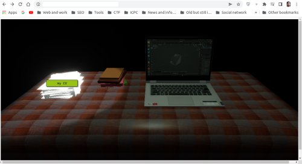
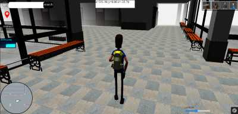
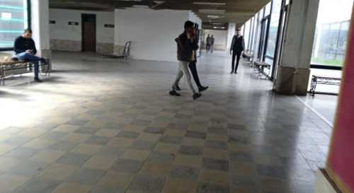

Other interests
-
Blender

fake blender image 
real image My domain of interests is converting real places into 3D digital models and websites.
and I always think about that trade off between perforance and reality level of my models so that I don't say "I did a very beutifaul project but it doesn't work!". beside images show how i copied my place of work into model using blender.
-
Copy the real world
Personal website fake IT Faculty real IT Faculty the second domain of concern is moving those models into internet and web so that everyone can use and see and interact.
so using WebGL and three.js and other javascript libraries that help make things easier I managed to make some websites.
-
Backend Dev
As a backend developer I tried all the time to cover those increasing demands and requests for more good user experience, so i used those technologies and platforms:
- elastic search
- Google CSE
- cpprestsdk
- MySQL
- Apache web server
- socket.io
-
Frontend Dev
As a frontend developer i used those technologies and platforms:
- amp html from google
- JQUERY
- Bootstrap
- Coolors.co to choose the right colors